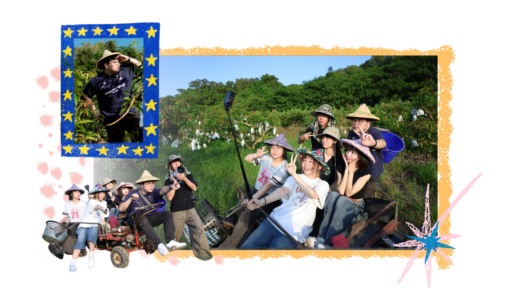
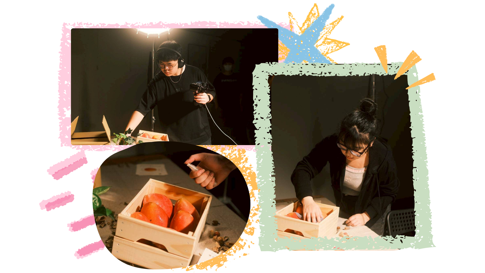
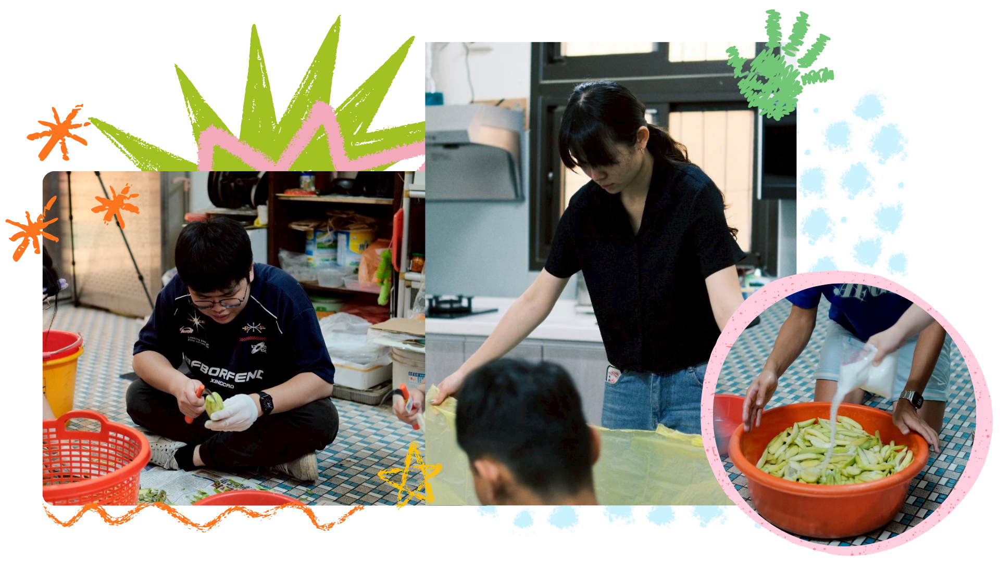
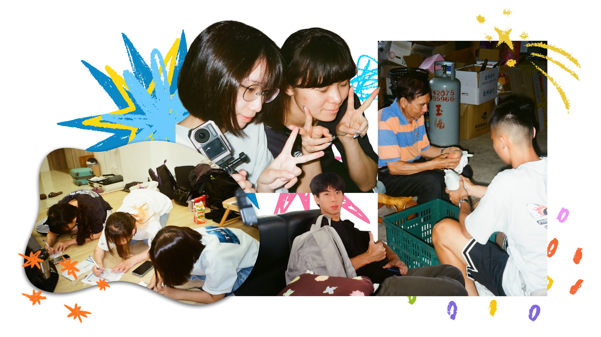
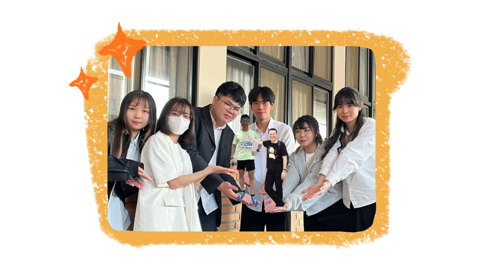
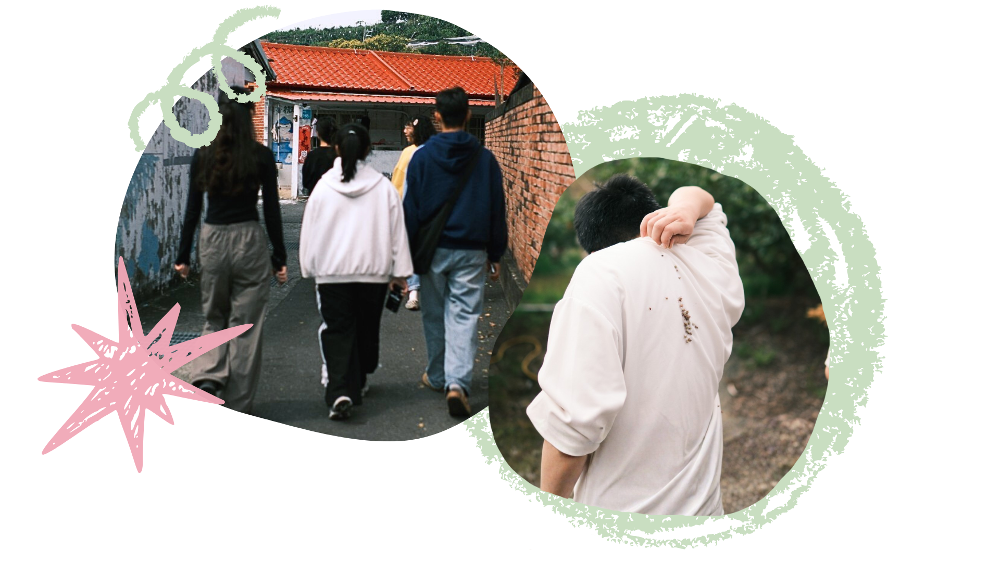
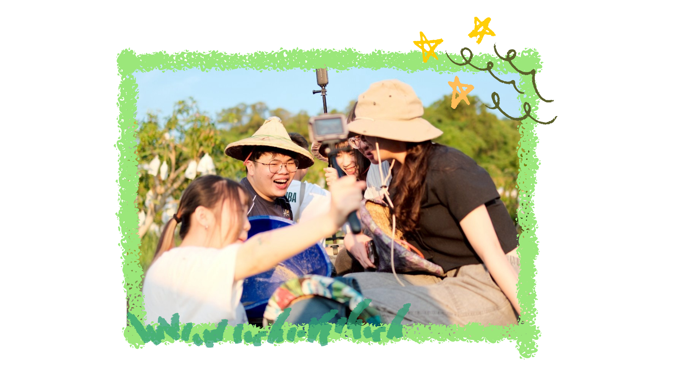
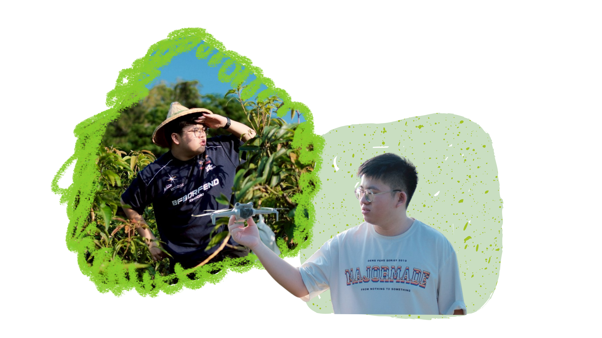

組員介紹
點擊我們頭像，認識我們呦!!
一起芒過的日子
從花開到採收，每一步都被細心照顧
Our name
關於『⽥間最芒的狗』
我們在⽥間奔跑，⽤熱情耕耘著屬於⾃⼰的芒果夢。
「⽥」是我們的舞台，承載著這⽚⼟地的故事與農業⽂化；
「最芒」不僅指芒果，更代表我們最忙、最努⼒，我們靈活、不怕吃苦，就像⽥間守護農⼈的最佳夥
伴，為⽟井芒果注⼊嶄新的⽣命⼒。我們不只是忙碌，⽽是充滿熱情，⽤最真誠的⽅式，讓這⽚⼟地的美好被世界看⾒

Product Photo
芒果：
這輩子沒想過自己能這麼漂亮⋯⋯！
芒果：這輩子沒想過自己能這麼漂亮⋯⋯！
芒果是我們畢製的主角，所以我們當然也要把每一顆芒果都拍的水噹噹，讓它們在鏡頭前展現出超越物種的美貌。
六個人vs六顆芒果，為了這六顆芒果，六個人都操碎了心，有人拿著噴霧在旁邊待命，精準控制果皮上的每一顆水珠；還有人負責專業打光，尋找那萬中選一的「黃金角度」。
我們是一群在攝影棚裡跟芒果過不去的芒狗，點進網站可以看看這些主角最後的成發照，也可以看到我們這一年多以來的熱血（+汗水）是怎麼凝結成這幾張美照的！

Green Mango
芒狗們的芒果青初體驗
芒狗們從一開始決定要做網站以後
炎炎夏日就是要吃酸酸甜甜的芒果青來解膩！
芒狗們下台南親自向阿公阿嬤取經！把阿公阿嬤的經驗帶回來跟大家分享，要得到最後的芒果青可不是一件簡單的事。
芒狗們從坐在地上學習如何削皮開始，對著滿滿的青芒果大開殺戒，還要幫這些芒果片洗一個香噴噴的澡，最後再加入滿滿的糖，冰入冰箱等待醃漬入味，這不僅僅是化學的作用，還反應出了我們一年多來心血的結晶。

memory
畢製是芒果味的，
而回憶是我們擠出來的
芒果是我們畢製的主角，但在這捲底片中，我們才是主角！
每一次按下的快門，都記錄了我們無法排練的真實，不是什麼精緻的劇照，是紀錄下我們努力的點滴！
在阿公阿嬤家吃芒果後的讚讚手勢、在疲累中擠出的勝利手勢又或者是一起趴在地板幫阿公阿嬤寫資料，都會成為埋在我們心中的美好記憶。
芒果很甜，但我們一起在混亂中擠出的笑容，好像比芒果還甜一點點！

challenge
勇敢的芒狗不畏挑戰！
芒狗們從一開始決定要做網站以後
大家分工合作 努力完成各自的任務
有的人搜集資料 有的人撰寫企劃書 有的人負責拍攝
其中也有遇到一些困難
但芒狗們絕對不會放棄！
將它們一個一個克服
一直到了第一次的非認可提案
在宣布提案通過的瞬間
芒狗們開心的差點從椅子上跳起來！
最後在拍團體紀念照的時候
大家決定要將與我們共同奮鬥的兩位指導老師捧在手心上
象徵著他們是我們的掌上「明」「裕」

people
台中走了六個無關緊要的人
但鬼針草大戰裡迎來了他的耶路撒冷
為了可以更加深入瞭解果園與爺爺奶奶
芒狗們決定第一次出征台南玉井！
到了芒果園之後
映入眼簾的是一大片盛開的芒果花海
同時也有調皮的芒狗發現地上有許多鬼針草⋯
這時鬼針草大戰隨即爆發！
大家互相丟來丟去 被黏得到處都是
連來幫忙的攝助也逃不過芒狗們的手掌心
（他也是被黏最多鬼針草的一位⋯）
鬼針草或許對小孩來說太幼稚了
但是對大學生來說剛剛好！

you see?
你看到了嗎?
拖拉機上的芒狗正開心的搖著尾巴！
芒狗們二次出征台南！
與上次不同的是這次大家特地在台南住一週
不再是匆匆拜訪
而是真正的走進爺爺與奶奶的生活裡
跟隨著爺爺奶奶的步伐
看著他們不斷在果園和家之間來回的身影
紀錄下屬於他們的每一天
芒狗們也首次體驗了搭乘果園內的拖拉機
：哇！
拖拉機啟動時的震動
嚇的每個人大叫了一聲
儘管如此大家還是玩的不亦樂乎
就像小朋友騎著搖搖馬一樣
單純又開心

record
記錄果園 也記錄我們
除了芒果有美照 芒狗們當然也要有！
大家走進果園
戴上斗笠、背起採收用的桶子
並坐上在田間奔馳的拖拉車
正式化身成為一日果農！
炎炎夏日下
芒狗們親自爬上芒果樹
體驗過去摘芒果時的高度與不便
汗水不停的從額頭滑落
也讓人更真實的感受到農務的辛苦與踏實
芒狗們除了用相機拍攝以外
還有用空拍機記錄下果園的全景
不僅將最完美的果園用影像保留下來
同時也保存了我們與果園的回憶